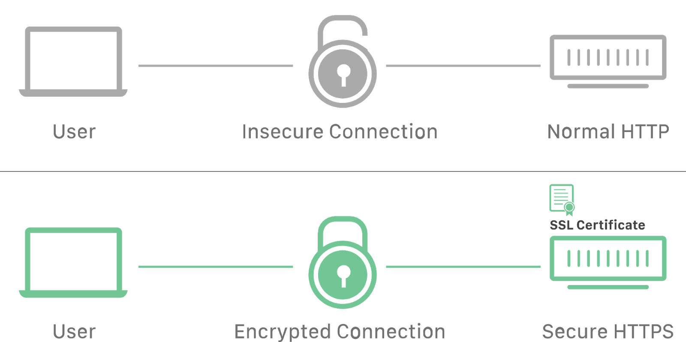

Протокол HTTP
Перед тем как пользователь увидит содержимое сайта на экране, браузер делает запрос на сервер, чтобы получить это самое содержимое. HTML-файл, изображения, стили и скрипты приходят с сервера по HTTP протоколу - набору правил и соглашений, используемых при передаче данных в сети.
 HyperText Transfer Protocol (протокол передачи гипертекста) - широко распространённый протокол для передачи веб-ресурсов различных типов: html, css, javascript, изображений, аудио и видео и т. д.
HyperText Transfer Protocol (протокол передачи гипертекста) - широко распространённый протокол для передачи веб-ресурсов различных типов: html, css, javascript, изображений, аудио и видео и т. д.
HTTP основан на структуре клиент-сервер и модели запрос-ответ, в которой клиентское приложение инициирует соединение, формирует запрос и отправляет его на сервер, после чего сервер обрабатывает этот запрос, формирует ответ и передаёт его обратно клиенту. Связь между ними осуществляется посредством череды перемежающихся HTTP-запросов и HTTP-ответов.

Запрос происходит в несколько этапов:
- DNS-запрос - поиск ближайшего DNS-сервера, чтобы преобразовать адрес (например google.com ) в его числовое представление, IP-адрес (74.125.87.99).
- Соединение - установка соединения с сервером по полученному IP-адресу.
- Отправка данных - пересылка пакетов с клиента на сервер.
- Ожидание ответа - ожидание пока пакеты данных дойдут до сервера, он их обработает и ответ вернется назад.
- Получение данных - пакеты пришли, можно получать из них данные.
Протокол HTTPS
HyperText Transfer Protocol Secure - это надстойка над протоколом HTTP, в которой все сообщения между клиентом и сервером шифруются в целях повышения безопасности. Обеспечивает защиту от атак, основанных на прослушивании соединения. Данные передаются поверх криптографических протоколов SSL или TLS.
При общении через обычное HTTP-соединение все данные передаются в виде текста и могут быть прочитаны всеми, кто получил доступ к соединению между клиентом и сервером. Если пользователи делают покупки онлайн и заполняют форму заказа, содержащую информацию о кредитной карте, их финансовые данные гораздо легче украсть, если они передаются в виде текста. С HTTPS данные будут зашифрованы и хакер не сможет их расшифровать, потому что для расшифровки необходим доступ к закрытому ключу, который хранится на сервере.